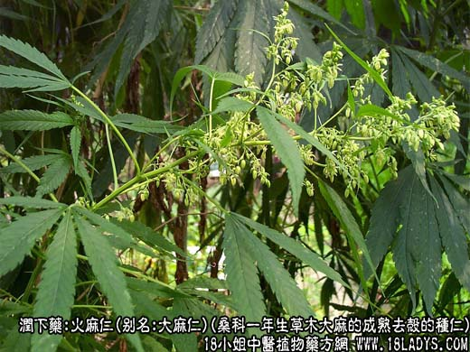
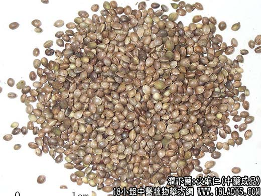
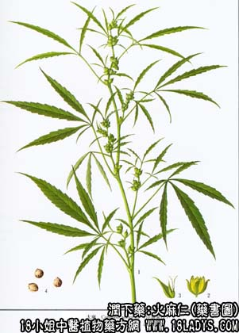

火麻仁为常用中药。始载于《神农本草经》列为上品。原名“大麻”。
别名：大麻仁，线麻子（带壳者）。
来源：为桑科一年生草木植物大麻的成熟去壳的种仁。均为栽培。
产地：主产于东北、华东，其它各省亦有生产。
性状鉴别：果实呈椭圆形或扁卵圆形，长4~5毫米，直径3~4毫米。表面光滑，灰绿色或灰黄色。有微细的白色或棕黑色花纹，两侧各有一条浅色棱线。一端纯尖，另一端有一圆形凹点，为果柄残痕。外果皮菲薄，内果皮坚脆，绿色种皮常粘附在内果皮上，不易分离。胚乳灰白色，菲薄，包围着弯曲的胚。子叶两片肥厚，胚根明显。气微、味淡，含油性。除去果实的皮壳，即成为火麻仁。
以净仁，绿黄白色，不泛油者为仁。
主要成分：含有多量脂肪油（约31%）；并有挥发油、蛋白质、维生素、卵磷脂等。
药理作用：有缓泻作用，属于滑润性泻药。所含的脂肪油对肠壁和粪便起润滑作用，软化大便，使易于排出。作用缓和，无肠绞痛副作用，泻后也不会引起便秘。
炮制：生用。
性味：甘平。
归经：入脾、胃、朋肠经。
功能：润燥滑肠。
主治：津桔便秘。老年体虚，产后血虚者宜之。
临床应用：1、用于治疗习惯性便秘。无论气虚便秘（胃肠运动功能较弱所致的便秘），或是肠燥便秘（由于肠道水分减少所致的便秘），煮可用火麻仁通便。老人、体弱者和产后的便秘尤其适用。可用一味火麻仁，捣烂煮糊，如冰糖，煮成象芝麻糊一样服用。也可配其他润肠作用的药物，如产和后便秘配当归、柏子仁，妊娠期便秘配瓜蒌仁、杏仁；阴虚者可加玉竹。
如胃肠燥热软甚，腹部胀满而有便秘，单用火麻仁效力不够，须配大黄、枳实等，方如麻子仁丸，此方也适用于有痔疮而患便秘者，但老人和体虚者则不宜用。
2、用于滋阴补血。配当归、白芍、生地等补益药。前人的经验说火麻仁“久服令人肥健”，服之“头发软乌润”。现代已很少把火麻仁当作补益药用，只是在某些补益剂中（如复脉汤）加入火麻仁一味，加强滋阴润燥作用。由于火麻仁含有蛋白质（约19%）、维生素E，卵磷脂等营养物质，据此分析，也会有一定的滋补作用。
此外，火麻仁（捣烂）用于外敷治疗未成脓的疖肿；配银花、甘草煎服，可治胃热所致的口腔炎；妇女分娩子宫收缩力弱时，服火麻仁可助产。
使用注意：前人经验认为火麻仁不宜多食，否则容易引起滑精，这一说法的确实性和理论根据尚等进一步研究。但现代也不主张连续长期大量服用火麻仁，如用于是慢性便秘时，火麻仁每月服三至四次也就够了。此外还有报道指出，一次食入火麻仁60~120g以上，可致中毒，出现呕吐、腹泻，甚至昏睡，值得注意。
用量：9~18g大剂，可用至30~45g。
处方举例：麻子仁丸（《伤寒论》）：火麻仁15g（研），甜杏仁9g，大黄6g，枳实6g，厚朴3g，白芍9g，水煎服或制丸用。
注：药品中另有大麻子为蓖麻的种子与火麻子不用不能混用。